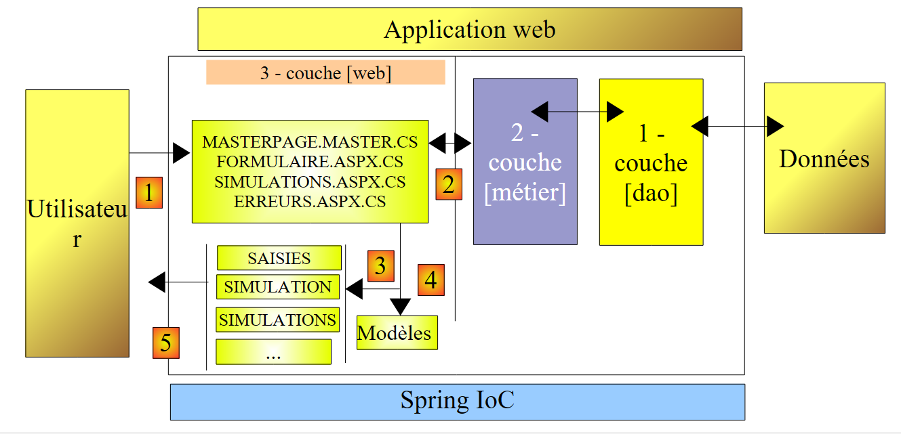
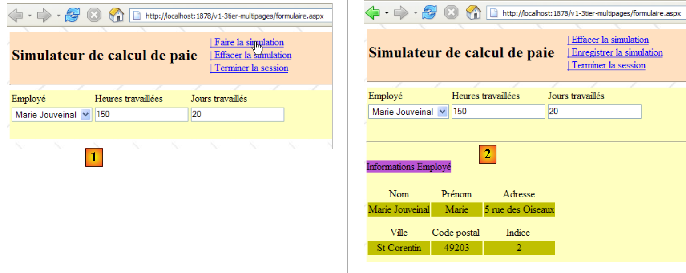
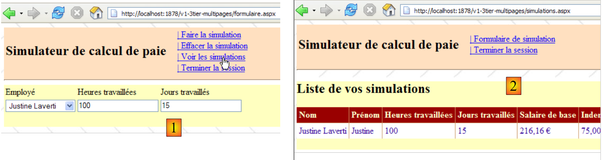
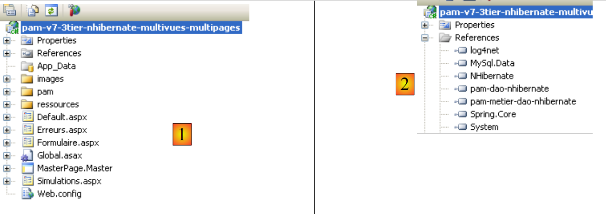
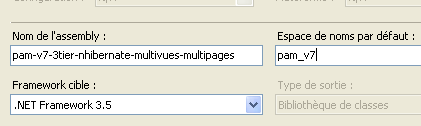

11. The [SimuPaie] application – version 7 – ASP.NET / multi-view / multi-page
Recommended reading: reference [1], Web Development with ASP.NET 1.1, section: Examples
We are now examining a version that is functionally identical to the three-tier ASP.NET application [pam-v4-3tier-nhibernate-multivues-monopage] discussed earlier, but we are modifying its architecture as follows: whereas in the previous version the views were implemented by a single ASPX page, here they will be implemented by three ASPX pages.
The architecture of the previous application was as follows:
 |
Here we have an MVC (Model–View–Controller) architecture:
- [Default.aspx.cs] contains the controller code. The [Default.aspx] page is the client’s sole point of contact. It handles all requests from the client.
- [Saisies, Simulation, Simulations, ...] are the views. These views are implemented here using [View] components on the [Default.aspx] page.
The architecture of the new version will be as follows:
 |
- only the [web] layer changes
- the views (what is presented to the user) remain unchanged.
- the controller code, which in the previous version was entirely in [Default.aspx.cs], is now distributed across several pages:
- [MasterPage.master]: a page that encapsulates elements common to the different views: the top banner with its menu options
- [Formulaire.aspx]: the page that displays the simulation form and manages the actions that take place on this form
- [Simulations.aspx]: the page that displays the list of simulations and handles the actions that occur on this page
- [Errors.aspx]: the page displayed when an application initialization error occurs. No actions are possible on this page.
This can be considered a multi-controller MVC architecture, whereas the architecture of the previous version was a single-controller MVC architecture.
Processing a client request follows these steps:
- The client makes a request to the application. They make it to one of the two pages [Formulaire.aspx, Simulations.aspx].
- The requested page processes this request. To do so, it may need assistance from the [business] layer, which itself may need the [DAO] layer if data needs to be exchanged with the database. The application receives a response from the [business] layer.
- Based on this response, it selects (3) the view (= the response) to send to the client, providing it (4) with the information (the model) it needs.
- The response is sent to the client (5)
11.1. The application's views
The different views presented to the user are as follows:
- - the [VueSaisies] view, which displays the simulation form

- - the [VueSimulation] view used to display the detailed simulation results:

- - the [SimulationView] view, which lists the simulations performed by the client

- - the [EmptySimulationsView] view, which indicates that the client has no simulations or no more simulations:

- the [ErrorView] view, which indicates an application initialization error:

11.2. Generating views in a multi-controller context
In the previous version, all views were generated from the single [Default.aspx] page. This page contained two [MultiView] components, and the views consisted of a combination of one or two [View] components belonging to these two [MultiView] components.
While effective when there are few views, this architecture reaches its limits as soon as the number of components forming the various views becomes large: indeed, with every request made to the single [Default.aspx] page, all of its components are instantiated, even though only some of them will be used to generate the response to the user. Unnecessary work is thus performed with each new request, which becomes a bottleneck when the total number of components on the page is large.
One solution is to distribute the views across different pages. That is what we are doing here. Let’s examine two different cases of view generation:
- the request is made to page P1, and it generates the response
- the request is made to a page P1, and this page asks a page P2 to generate the response
11.2.1. Case 1: a controller/view page
In Case 1, we return to the single-controller architecture of the previous version, where the [Default.aspx] page is page P1:
 |
- the client makes a request to page P1 (1)
- Page P1 processes this request. To do so, it may need assistance from the [business] layer (2), which itself may need the [DAO] layer if data needs to be exchanged with the database. The application receives a response from the [business] layer.
- Based on this response, it selects (3) the view (= the response) to send to the client, providing it (4) with the information (the model) it needs. This involves selecting the [Panel] or [View] components to display on page P1 and initializing the components they contain.
- The response is sent to the client (5)
Here are two examples taken from the application under study:
[Formulaire.aspx page]
 |
- in [1]: after requesting the [Formulaire.aspx] page, the user requests a simulation
- in [2]: the [Formulaire.aspx] page processed this request and generated the response itself by displaying a [View] component that had not been displayed in [1]
[page Simulations.aspx]
 |
- in [1]: after requesting the [Simulations.aspx] page, the user wants to remove a simulation
- in [2]: the [Simulations.aspx] page processed this request and generated the response itself by re-displaying the new list of simulations.
 |
11.2.2. Case 2: a single-controller page, a controller/view page
Case 2 can cover various architectures. We will choose the following:
 |
- the client makes a request to page P1 (1)
- Page P1 processes this request. To do so, it may need assistance from the [business] layer (2), which itself may need the [DAO] layer if data needs to be exchanged with the database. The application receives a response from the [business] layer.
- Based on this, it selects (3) the view (= the response) to send to the client by providing it (4) with the information (the template) it needs. In this case, the view to be generated must be created by a page other than P1—specifically, page P2. To perform operations (3) and (4), page P1 has two options:
- transfer execution to page P2 using the operation [Server.Transfer("P2.aspx")]. In this case, it can place the model intended for page P2 in the request context [Context.Items["key"]=value] or in the user session [Session.["key"]=value]. Page P2 will then be instantiated, and when its Load event is processed, for example, it can retrieve the information passed by page P1 using the operations [value=(Type)Context.Items["key"] or [value=(Type)Session["key"], as appropriate, where Type is the type of the value associated with the key. Transmitting values via the Context is most appropriate if there is no need for the model values to be retained for a future client request.
- Ask the client to redirect to page P2 using the operation [Response.Redirect("P2.aspx")]. In this case, page P1 will place the model intended for page P2 into the session, since the request context is cleared at the end of each request. However, here, the redirection will cause the first client request to P1 to end and trigger a second request from the same client, this time to P2. There are two successive requests. We know that the session is one way to preserve "memory" between requests. There are other solutions besides the session.
- Regardless of how P2 takes over, we then return to case 1: P2 has received a request that it will process (5) and will generate the response itself (6, 7). We can also imagine that after processing the request, page P2 will hand off to page P3, and so on.
Here is an example taken from the application under study:
 |
- in [1]: the user who requested the [Formulaire.aspx] page asks to see the list of simulations
- in [2]: the [Formulaire.aspx] page processes this request and redirects the client to the [Simulations.aspx] page. It is the latter that provides the response to the user. Instead of asking the client to redirect, the [Formulaire.aspx] page could have forwarded the client’s request to the [Simulations.aspx] page. In this case in [2], we would have seen the same URL as in [1]. In fact, a browser always displays the last requested URL:
- The action requested in [1] is intended for the [Formulaire.aspx] page. The browser sends a POST request to this page.
- If the [Formulaire.aspx] page processes the request and then forwards it via [Server.Transfer("Simulations.aspx")] to the [Simulations.aspx] page, we remain within the same request. The browser will then display in [2] the URL of [Formulaire.aspx] to which the POST was sent.
- If the [Formulaire.aspx] page processes the request and then redirects it via [Response.Redirect("Simulations.aspx")] to the [Simulations.aspx] page, the browser then makes a second request, a GET request to [Simulations.aspx]. The browser will then display in [2] the URL of [Simulations.aspx] to which the GET request was sent. This is what screenshot [2] above shows us.
11.3. The Visual Web Developer project for the [web] layer
The Visual Web Developer project for the [web] layer is as follows:
 |
- In [1] we find:
- the application’s configuration file [Web.config] – which is identical to that of the [pam-v4-3tier-nhibernate-multivues-monopage] application.
- the [Default.aspx] page – simply redirects the client to the [Formulaire.aspx] page
- the [Formulaire.aspx] page, which displays the simulation form to the user and handles actions related to this form
- the [Simulations.aspx] page, which displays the user’s list of simulations and handles actions related to this page
- The [Errors.aspx] page, which displays a page to the user indicating an error encountered when the web application starts.
- In [2], we see the project references.
Let’s return to the architecture of the new project:
 |
Compared to the [pam-v4-3tier-nhibernate-multivues-monopage] project, only the views have changed. This is why the new project reuses some of the files from that project:
- the configuration file [Web.config]
- the referenced DLLs [pam-dao-nhibernate, pam-metier-dao-nhibernate, Spring.Core, NHibernate]
- the global application class [Global.asax]
- the folders [images, resources, pam]
To maintain consistency with the project currently under development, we will ensure that the namespace for the views and the global application class is [pam-v7]:
 |
11.4. The page presentation code
11.4.1. The master page [MasterPage.master]
The application views presented in Section 11.1 have common elements that can be factored into a Master Page, known as the Master Page in Visual Studio. Take, for example, the views [VueSaisies] and [VueSimulationsVides] below, generated respectively by the pages [Formulaire.aspx] and [Simulations.aspx]:
 |
These two views share the top banner (Title and Menu Options). This is true of all views that will be presented to the user: they will all have the same top banner. To enable different pages to share the same presentation fragment, there are various solutions, including the following:
- Place this common fragment in a user control. This was the primary technique in ASP.NET 1.1
- Place this common fragment in a Master page. This technique was introduced with ASP.NET 2.0. This is the one we are using here.
To create a Master Page in a web application, follow these steps:
- Right-click on the project / Add New Item / Master Page:
 |
Adding a Master Page adds three files to the web application by default:
- [MasterPage.master]: the layout code for the Master Page
- [MasterPage.master.cs]: the control code for the Master Page
- [MasterPage.Master.Designer.cs]: the component declarations for the Master Page
The code generated by Visual Studio in [MasterPage.master] is as follows:
<%@ Master Language="C#" AutoEventWireup="true" CodeBehind="MasterPage.master.cs" Inherits="pam_v7.MasterPage" %>
<!DOCTYPE html PUBLIC "-//W3C//DTD XHTML 1.0 Transitional//EN" "http://www.w3.org/TR/xhtml1/DTD/xhtml1-transitional.dtd">
<html xmlns="http://www.w3.org/1999/xhtml">
<head runat="server">
<title>Untitled Page</title>
<asp:ContentPlaceHolder id="head" runat="server">
</asp:ContentPlaceHolder>
</head>
<body>
<form id="form1" runat="server">
<div>
<asp:ContentPlaceHolder id="ContentPlaceHolder1" runat="server">
</asp:ContentPlaceHolder>
</div>
</form>
</body>
</html>
- Line 1: The <%@ Master ... %> tag is used to define the page as a Master page. The page's control code will be in the file specified by the CodeBehind attribute, and the page will inherit from the class specified by the Inherits attribute.
- Lines 12–18: The Master page form
- Lines 14–16: An empty container that, in our application, will hold one of the pages [Form.aspx, Simulations.aspx, Errors.aspx]. The client always receives the same page in response—the Master page—in which the [ContentPlaceHolder1] container will receive an HTML stream provided by one of the pages [Form.aspx, Simulations.aspx, Errors.aspx]. Thus, to change the appearance of the pages sent to clients, simply change the appearance of the Master page.
- Lines 8–9: an empty container that allows the "child" pages to customize the header <head>...</head>.
The visual representation (Design tab) of this source code is shown in (1) below. Additionally, you can add as many containers as desired using the [ContentPlaceHolder] component (2) from the [Standard] toolbar.
 |
The control code generated by Visual Studio in [MasterPage.master.cs] is as follows:
using System;
public partial class MasterPage : System.Web.UI.MasterPage
{
protected void Page_Load(object sender, EventArgs e)
{
}
}
- Line 3: The class referenced by the [Inherits] attribute of the <%@ Master ... %> directive in the [MasterPage.master] page derives from the [System.Web.UI.MasterPage] class
Above, we see the presence of the Page_Load method, which handles the Load event of the master page. The master page will contain another page within it. In what order do the Load events of the two pages occur? This is a general rule: the Load event of a component occurs before that of its container. Here, the Load event of the page embedded in the master page will therefore occur before that of the master page itself.
To generate a page in that uses the previous [MasterPage.master] page as its master page, you can proceed as follows:
 |
- in [1]: right-click on the master page, then select [Add Content Page]
- in [2]: a default page, in this case [WebForm1.aspx], is generated.
The presentation code for [WebForm1.aspx] is as follows:
<%@ Page Title="" Language="C#" MasterPageFile="~/MasterPage.Master" AutoEventWireup="true" CodeBehind="WebForm1.aspx.cs" Inherits="pam_v7.WebForm1" %>
<asp:Content ID="Content1" ContentPlaceHolderID="ContentPlaceHolder1" runat="server">
</asp:Content>
- Line 1: The Page directive and its attributes
- MasterPageFile: specifies the master page file for the page described by the directive. The ~ symbol denotes the project folder.
- The other parameters are the standard ones for an ASP web page
- Lines 2–3: The <asp:Content> tags are linked one by one to the <asp:ContentPlaceHolder> directives in the master page via the ContentPlaceHolderID attribute. The components placed between lines 2–3 above will, at runtime, be placed in the ContentPlaceHolder1 container on the master page.
By renaming the page [WebForm1.aspx] generated in this way, we can build the various pages using [MasterPage.master] as the master page.
For our [SimuPaie] application, the visual appearance of the master page will be as follows:
 |
No. | Type | Name | Role |
Panel (pink above) | header | page header | |
Panel (yellow above) | content | page content | |
LinkButton | LinkButtonRunSimulation | requests the simulation calculation | |
LinkButton | LinkButtonClearSimulation | clears the input form | |
LinkButton | LinkButtonViewSimulations | displays the list of simulations already performed | |
LinkButton | LinkButtonSimulationForm | returns to the input form | |
LinkButton | LinkButtonSaveSimulation | saves the current simulation to the simulation list | |
LinkButton | LinkButtonEndSession | ends the current session |
The corresponding source code is as follows:
<%@ Master Language="C#" AutoEventWireup="true" CodeBehind="MasterPage.master.cs" Inherits="pam_v7.MasterPage" %>
<!DOCTYPE html PUBLIC "-//W3C//DTD XHTML 1.0 Transitional//EN" "http://www.w3.org/TR/xhtml1/DTD/xhtml1-transitional.dtd">
<html xmlns="http://www.w3.org/1999/xhtml">
<head id="Head1" runat="server">
<title>PAM Application</title>
</head>
<body background="resources/standard.jpg">
<form id="form1" runat="server">
<asp:ScriptManager ID="ScriptManager1" runat="server" EnablePartialRendering="true" />
<asp:UpdatePanel runat="server" ID="UpdatePanelPam" UpdateMode="Conditional">
<ContentTemplate>
<asp:Panel ID="header" runat="server" BackColor="#FFE0C0">
<table>
<tr>
<td>
<h2>
Payroll Calculator</h2>
</td>
<td>
<label>
 </label>
<asp:UpdateProgress ID="UpdateProgress1" runat="server">
<ProgressTemplate>
<img alt="" src="images/indicator.gif" />
<asp:Label ID="Label5" runat="server" BackColor="#FF8000"
EnableViewState="False" Text="Calculating. Please wait....">
</asp:Label>
</ProgressTemplate>
</asp:UpdateProgress>
</td>
<td>
<asp:LinkButton ID="LinkButtonFaireSimulation" runat="server"
CausesValidation="False">| Run simulation<br/>
</asp:LinkButton>
<asp:LinkButton ID="LinkButtonClearSimulation" runat="server"
CausesValidation="False">| Clear simulation<br/>
</asp:LinkButton>
<asp:LinkButton ID="LinkButtonViewSimulations" runat="server"
CausesValidation="False">| View simulations<br/>
</asp:LinkButton>
<asp:LinkButton ID="LinkButtonSimulationForm" runat="server"
CausesValidation="False">| Back to the simulation form<br/>
</asp:LinkButton>
<asp:LinkButton ID="LinkButtonSaveSimulation" runat="server"
CausesValidation="False">| Save simulation<br/>
</asp:LinkButton>
<asp:LinkButton ID="LinkButtonTerminerSession" runat="server"
CausesValidation="False">| End session<br/>
</asp:LinkButton>
</td>
</tr>
</table>
<hr />
</asp:Panel>
<div>
<asp:Panel ID="content" runat="server" BackColor="#FFFFC0">
<asp:ContentPlaceHolder ID="ContentPlaceHolder1" runat="server">
</asp:ContentPlaceHolder>
</asp:Panel>
</div>
</ContentTemplate>
</asp:UpdatePanel>
</form>
</body>
</html>
- Line 1: Note the name of the master page class: MasterPage
- Line 8: Define a background image for the page.
- Lines 9–64: the form
- Line 10: The ScriptManager component required for Ajax effects
- Lines 11–63: the AJAX container
- Lines 12–62: the Ajax-enabled content
- lines 13–55: the Panel component [header]
- lines 57-60: the Panel component [content]
- lines 58–59: the [ContentPlaceHolder1] component, which will contain the encapsulated page [Formulaire.aspx, Simulations.aspx, Erreurs.aspx]
To build this page, we can insert into the [header] panel the ASPX code of the [HeaderView] view from the [Default.aspx] page of the [pam-v4-3tier-nhibernate-multivues-monopage] version, described in section 8.5.2.
11.4.2. The [Formulaire.aspx] page
To generate this page, follow the method described in section 11.4.1 and rename the generated [WebForm1.aspx] page to [Form.aspx]. The visual appearance of the [Form.aspx] page under construction will be as follows:
 |
The visual appearance of the [Formulaire.aspx] page consists of two elements:
- [1] the master page with its [ContentPlaceHolder1] container (2)
- [2] the components placed in the [ContentPlaceHolder1] container. These are identical to those in the previous application.
The source code for this page is as follows:
<%@ Page Language="C#" MasterPageFile="~/MasterPage.master" AutoEventWireup="true"
CodeBehind="Formulaire.aspx.cs" Inherits="pam_v7.PageFormulaire" Title="Payroll calculation simulation: form" %>
<%@ MasterType VirtualPath="~/MasterPage.master" %>
<asp:Content ID="Content1" ContentPlaceHolderID="ContentPlaceHolder1" runat="Server">
<div>
<table>
<tr>
<td>
Employee
</td>
<td>
Hours worked
</td>
<td>
Days worked
</td>
<td>
</td>
</tr>
...
</asp:Content>
- Line 1: The Page directive with its MasterPageFile attribute
- line 4: the master page control class can expose public fields and properties. These are accessible to the encapsulated pages using the syntax Master.[field] or Master.[property]. The Master property of the page refers to the master page as an instance of type [System.Web.UI.MasterPage]. Therefore, in our example, we should actually write (MasterPage)(Master).[field] or (MasterPage)(Master).[property]. This type casting can be avoided by inserting the MasterType directive from line 4 into the page. The VirtualPath attribute of this directive specifies the master page file. The compiler can then recognize the public fields, properties, and methods exposed by the master page class, in this case of type [MasterPage].
- Lines 5–22: the content to be inserted into the [ContentPlaceHolder1] container of the master page.
This page can be built by setting its content (lines 6–21) to that of the [VueSaisies] view described in Section 8.5.3 and that of the [VueSimulation] view described in Section 8.5.4.
11.4.3. The [Simulations.aspx] page
To generate this page, follow the method described in section 11.4.1 and rename the resulting [WebForm1.aspx] page to [Simulations.aspx]. The visual appearance of the [Simulations.aspx] page currently under construction is as follows:
 |
The visual appearance of the [Simulations.aspx] page consists of two elements:
- [1] the master page with its [ContentPlaceHolder1] container
- at [2] the components placed in the [ContentPlaceHolder1] container. These are identical to those in the previous application.
The source code for this page is as follows:
<%@ Page Language="C#" MasterPageFile="~/MasterPage.master" AutoEventWireup="true"
CodeBehind="Simulations.aspx.cs" Inherits="pam_v7.PageSimulations" Title="Pam: list of simulations" %>
<%@ MasterType VirtualPath="~/MasterPage.master" %>
<asp:Content ID="Content1" ContentPlaceHolderID="ContentPlaceHolder1" runat="Server">
<asp:MultiView ID="MultiView1" runat="server">
<asp:View ID="View1" runat="server">
<h2>
List of your simulations</h2>
<p>
<asp:GridView ID="GridViewSimulations" runat="server" ...>
...
</asp:GridView>
</p>
</asp:View>
<asp:View ID="View2" runat="server">
<h2>
Your simulation list is empty</h2>
</asp:View>
</asp:MultiView><br />
</asp:Content>
We can build this page by setting its content (lines 5–21) to that of the [VueSimulations] view described in section 8.5.5 and that of the [VueSimulationsVides] view described in section 8.5.6.
11.4.4. The [Errors.aspx] page
To generate this page, follow the method described in section 11.4.1 and rename the resulting [WebForm1.aspx] page to [Errors.aspx]. The visual appearance of the [Errors.aspx] page currently under construction is as follows:
 |
The visual appearance of the [Errors.aspx] page consists of two elements:
- [1] the master page with its [ContentPlaceHolder1] container
- [2] the components placed in the [ContentPlaceHolder1] container. These are identical to those in the previous application.
The source code for this page is as follows:
<%@ Page Language="C#" MasterPageFile="~/MasterPage.master" AutoEventWireup="true"
CodeBehind="Errors.aspx.cs" Inherits="pam_v7.PageErrors" Title="Pam: Errors" %>
<%@ MasterType VirtualPath="~/MasterPage.master" %>
<asp:Content ID="Content1" ContentPlaceHolderID="ContentPlaceHolder1" Runat="Server">
<h3>The following errors occurred when the application started</h3>
<ul>
<asp:Repeater id="rptErrors" runat="server">
<ItemTemplate>
<li>
<%# Container.DataItem %>
</li>
</ItemTemplate>
</asp:Repeater>
</ul>
</asp:Content>
11.5. Page control code
11.5.1. Overview
Let’s return to the application architecture:
 |
- [Global] is the [HttpApplication] object that initializes (step 0) the application. This class is identical to the one in the previous version.
- The controller code, which in the previous version was entirely in [Default.aspx.cs], is now spread across several pages:
- [MasterPage.master]: the master page for [Form.aspx, Simulations.aspx, Errors.aspx]. It contains the menu.
- [Formulaire.aspx]: the page that displays the simulation form and handles the actions performed on this form
- [Simulations.aspx]: the page that displays the list of simulations and handles the actions that occur on this page
- [Errors.aspx]: the page displayed when an application initialization error occurs. No actions are possible on this page.
Processing a client request follows these steps:
- The customer makes a request to the application. They typically do so on one of the two pages [Form.aspx, Simulations.aspx], but nothing prevents them from requesting the [Errors.aspx] page. This scenario must be accounted for.
- The requested page processes this request (step 1). To do so, it may need assistance from the [business] layer (step 2), which itself may need the [DAO] layer if data needs to be exchanged with the database. The application receives a response from the [business] layer.
- Based on this, it selects (step 3) the view (= the response) to send to the client and provides it (step 4) with the information (the model) it needs. We have seen three possibilities for generating this response:
- the requested page (D) is also the page (R) sent in response. Building the response model (R) then consists of assigning certain components of page (D) the values they must have in the response.
- The requested page (D) is not the page (R) sent in response. The page (D) can then:
- Transfer the execution flow to page (R) using the Server.Transfer(" R ") statement. The model can then be placed in the context using Context.Items("key")=value or, less commonly, in the session using Session.Items("key")=value
- Redirect the client to page (R) using the statement Response.redirect(" R "). The model can then be placed in the session but not in the context.
- The response is sent to the client (step 5)
Each of the pages [MasterPage.master, Form.aspx, Simulations.aspx, Errors.aspx] will respond to one or more of the following events:
- Init: first event in the page lifecycle
- Load: occurs when the page loads
- Click: a click on one of the links in the master page menu
We process the pages one after another, starting with the master page.
11.5.2. Control code for the [MasterPage.master] page
11.5.2.1. Class skeleton
The master page control code has the following skeleton:
using System.Web.UI.WebControls;
namespace pam_v7
{
public partial class MasterPage : System.Web.UI.MasterPage
{
// the menu
public LinkButton RunSimulation
{
get { return LinkButtonRunSimulation; }
}
...
// set the menu
public void SetMenu(bool runSimulation, bool saveSimulation, bool clearSimulation, bool simulationForm, bool viewSimulations, bool endSession)
{
....
}
// Handle the [End Session] option
protected void LinkButtonEndSession_Click(object sender, System.EventArgs e)
{
....
}
// Initialize master page
protected void Page_Init(object sender, System.EventArgs e)
{
....
}
}
}
}
- line 5: the class is named [MasterPage] and derives from the system class [System.Web.UI.MasterPage].
- lines 9–14: the 6 menu options are exposed as public properties of the class
- lines 16–19: the public SetMenu method allows the pages [Formulaire.aspx, Simulations.aspx, Erreurs.aspx] to set the master page menu
- lines 22–25: the procedure that handles the click on the [LinkButtonTerminerSession] link
- Lines 28–31: The procedure that handles the Init event of the master page
11.5.2.2. Public properties of the class
using System.Web.UI.WebControls;
namespace pam_v7
{
public partial class MasterPage : System.Web.UI.MasterPage
{
// the menu
public LinkButton RunSimulation
{
get { return LinkButtonRunSimulation; }
}
public LinkButton ClearSimulationOption
{
get { return LinkButtonClearSimulation; }
}
public LinkButton SaveSimulationOption
{
get { return LinkButtonSaveSimulation; }
}
public LinkButton ViewSimulationsOption
{
get { return LinkButtonViewSimulations; }
}
public LinkButton OptionEndSession
{
get { return LinkButtonEndSession; }
}
public LinkButton SimulationFormOption
{
get { return LinkButtonSimulationForm; }
}
...
}
}
To understand this code, you need to recall the components that make up the master page:
 |
No. | Type | Name | Role |
Panel (pink above) | header | page header | |
Panel (yellow above) | content | page content | |
LinkButton | LinkButtonRunSimulation | Request simulation calculation | |
LinkButton | LinkButtonClearSimulation | clears the input form | |
LinkButton | LinkButtonViewSimulations | displays the list of simulations already performed | |
LinkButton | LinkButtonSimulationForm | returns to the input form | |
LinkButton | LinkButtonSaveSimulation | saves the current simulation to the simulation list | |
LinkButton | LinkButtonEndSession | ends the current session |
Components 1 through 6 are not accessible outside the page that contains them. The properties in lines 9 through 37 are intended to make them accessible to external classes, in this case the classes of the application’s other pages.
11.5.2.3. The SetMenu method
The public SetMenu method allows the pages [Formulaire.aspx, Simulations.aspx, Erreurs.aspx] to set the master page’s menu. Its code is basic:
// set the menu
public void SetMenu(bool runSimulation, bool saveSimulation, bool clearSimulation, bool simulationForm, bool viewSimulations, bool endSession)
{
// set the menu options
LinkButtonRunSimulation.Visible = boolRunSimulation;
LinkButtonSaveSimulation.Visible = boolSaveSimulation;
LinkButtonClearSimulation.Visible = boolClearSimulation;
LinkButtonViewSimulations.Visible = boolViewSimulations;
LinkButtonSimulationForm.Visible = boolSimulationForm;
LinkButtonEndSession.Visible = boolEndSession;
}
11.5.2.4. Event handling on the master page
The master page will handle two events:
- the Init event, which is the first event in the page's lifecycle
- the Click event on the [LinkButtonTerminerSession] link
The master page has five other links: [LinkButtonRunSimulation, LinkButtonSaveSimulation, LinkButtonClearSimulation, LinkButtonViewSimulations, LinkButtonSimulationForm]. As an example, let’s examine what needs to be done when the [LinkButtonRunSimulation] link is clicked:
- verify the data entered (hours, days) on the [Form.aspx] page
- calculate the salary
- display the results on the [Form.aspx] page
Steps 1 and 3 require access to the components on the [Form.aspx] page. This is not the case. In fact, the master page has no knowledge of the components on the pages that may be inserted into its [ContentPlaceHolder1] container. In our example, it is up to the [Formulaire.aspx] page to handle the click on the [LinkButtonFaireSimulation] link, since it is the page that is displayed when this event occurs. How can it be notified of this event?
- Since the [LinkButtonFaireSimulation] link is not part of the [Formulaire.aspx] page, we cannot write the usual procedure in [Formulaire.aspx]:
private void LinkButtonFaireSimulation_Click(object sender, System.EventArgs e)
{
...
}
You can work around the problem with the following code in [Formulaire.aspx]:
using System.Collections.Generic;
...
namespace pam_v7
{
public partial class Form: System.Web.UI.Page
{
// Page load
protected void Page_Load(object sender, System.EventArgs e)
{
// event handler
Master.OptionRunSimulation.Click += RunSimulation_Click;
Master.OptionClearSimulation.Click += OptClearSimulation_Click;
Master.OptionViewSimulations.Click += OptViewSimulations_Click;
Master.OptionSaveSimulation.Click += OptSaveSimulation_Click;
...
}
// payroll calculation
private void OptRunSimulation_Click(object sender, System.EventArgs e)
{
....
}
// Clear simulation
private void OptClearSimulation_Click(object sender, System.EventArgs e)
{
...
}
protected void OptViewSimulations_Click(object sender, System.EventArgs e)
{
...
}
protected void OptSaveSimulation_Click(object sender, System.EventArgs e)
{
...
}
}
}
- lines 12–15: When the Load event of the [Formulaire.aspx] page occurs, the [MasterPage] class of the master page has been instantiated. Its public Optionxx properties are accessible and are of type LinkButton, a component that supports the Click event. We associate the following methods with these Click events:
- OptFaireSimulation_Click for the Click event on the LinkButtonFaireSimulation link
- OptEffacerSimulation_Click for the Click event on the LinkButtonEffacerSimulation link
- OptVoirSimulations_Click for the Click event on the LinkButtonVoirSimulations link
- OptEnregistrerSimulation_Click for the Click event on the LinkButtonEnregistrerSimulation link
Handling of Click events on the six menu links will be distributed as follows:
- the [Formulaire.aspx] page will handle the [LinkButtonRunSimulation, LinkButtonSaveSimulation, LinkButtonClearSimulation, LinkButtonViewSimulations] links
- the [Simulations.aspx] page will handle the [LinkButtonSimulationForm] link
- the master page [MasterPage.master] will handle the [LinkButtonEndSession] link. For this event, it does not need to know which page it encapsulates.
11.5.2.5. The Init event of the master page
The three pages [Form.aspx, Simulations.aspx, Errors.aspx] of the application use [MasterPage.master] as their master page. Let’s call the master page M and the encapsulated page E. When page E is requested by the client, the following events occur in order:
- E.Init
- M.Init
- E.Load
- M.Load
- ...
We will use the Init event of page M to execute code that should be run as early as possible, regardless of the target page E. To identify this code, let’s review the application overview:
 |
Above, [Global] is the [HttpApplication] object that initializes the application. This class is the same as in the [pam-v4-3tier-nhibernate-multivues-monopage] version:
using System;
...
namespace pam_v7
{
public class Global : System.Web.HttpApplication
{
// --- application static data ---
public static Employee[] Employees;
public static IPamMetier PamMetier = null;
public static string Msg;
public static bool Error = false;
// Application startup
public void Application_Start(object sender, EventArgs e)
{
...
}
public void Session_Start(object sender, EventArgs e)
{
...
}
}
}
If the [Global] class fails to initialize the application correctly, it sets two static public variables:
- the boolean Error on line 12 is set to true
- the `Msg` variable on line 11 contains a message providing details about the error encountered
When a user requests one of the pages [Form.aspx, Simulations.aspx] while the application has not initialized correctly, that request must be forwarded or redirected to the [Errors.aspx] page, which will display the error message from the [Global] class. There are several ways to handle this situation:
- Perform the initialization error check in the Init or Load event handler of each of the pages [Formulaire.aspx, Simulations.aspx]
- Perform the initialization error check in the Init or Load event handler of the master page for these two pages. This method has the advantage of placing the initialization error check in a single location.
We choose to perform the initialization error check in the Init event handler of the master page:
protected void Page_Init(object sender, System.EventArgs e)
{
// event handler
LinkButtonTerminerSession.Click += LinkButtonTerminerSession_Click;
// Initialization errors?
if (Global.Error)
{
// Is the encapsulated page the error page?
bool isErrorPage =...;
// if the error page is displayed, let it be; otherwise, redirect the client to the error page
if (!isErrorPage)
Response.Redirect("Errors.aspx");
return;
}
}
The code above will execute as soon as one of the pages [Form.aspx, Simulations.aspx, Errors.aspx] is requested. If the requested page is [Form.aspx] or [Simulations.aspx], we simply (line 12) redirect the client to the [Errors.aspx] page, which displays the error message from the [Global] class. If the requested page is [Errors.aspx], this redirection must not occur: the [Errors.aspx] page must be displayed. We therefore need to know, within the [Page_Init] method of the master page, which page it encapsulates.
Let’s revisit the master page’s component tree:
...
<body background="resources/standard.jpg">
<form id="form1" runat="server">
<asp:Panel ID="entete" runat="server" BackColor="#FFE0C0" Width="1239px" >
...
</asp:Panel>
<div>
<asp:Panel ID="content" runat="server" BackColor="#FFFFC0">
<asp:ContentPlaceHolder ID="ContentPlaceHolder1" runat="server">
</asp:ContentPlaceHolder>
</asp:Panel>
</div>
</form>
</body>
</html>
- lines 1-13: the container with id "form1"
- lines 4-6: the container with ID "entete", included in the container with ID "form1"
- lines 8-11: the container with id "content", included in the container with id "form1"
- lines 9-10: the container with id "ContentPlaceHolder1", included in the container with id "content"
A page E embedded in master page M is contained within the container with id "ContentPlaceHolder1". To reference a component with id C on this page E, we would write:
this.FindControl("form1").FindControl("content").FindControl("ContentPlaceHolder1").FindControl("C");
The component tree for the [Errors.aspx] page is as follows:
<%@ Page Language="C#" MasterPageFile="~/MasterPage.master" AutoEventWireup="true"
CodeBehind="Errors.aspx.cs" Inherits="pam_v7.PageErrors" Title="Pam: Errors" %>
<%@ MasterType VirtualPath="~/MasterPage.master" %>
<asp:Content ID="Content1" ContentPlaceHolderID="ContentPlaceHolder1" Runat="Server">
<h3>The following errors occurred when the application started</h3>
<ul>
<asp:Repeater id="rptErrors" runat="server">
<ItemTemplate>
<li>
<%# Container.DataItem %>
</li>
</ItemTemplate>
</asp:Repeater>
</ul>
</asp:Content>
When the [Errors.aspx] page is merged with the M master page, the content of the <asp:Content> tag above (lines 5–16) is integrated into the <asp:ContentPlaceHolder> tag with the ID "ContentPlaceholder1" on the M page, resulting in the following component tree:
- Line 12: The [rptErrors] component can be used to determine whether or not the master page M contains the [Errors.aspx] page. This component exists only on this page.
These explanations are sufficient to understand the code of the [Page_Init] procedure in the master page:
protected void Page_Init(object sender, System.EventArgs e)
{
// event handler
LinkButtonTerminerSession.Click += LinkButtonTerminerSession_Click;
// Initialization errors?
if (Global.Error)
{
// Is the encapsulated page the error page?
bool isErrorPage = this.FindControl("form1").FindControl("content").FindControl("ContentPlaceHolder1").FindControl("rptErrors") != null;
// if the error page is displayed, do nothing; otherwise, redirect the client to the error page
if (!isErrorPage)
Response.Redirect("Errors.aspx");
return;
}
}
- Line 4: We associate an event handler with the Click event on the LinkButtonTerminerSession link. This handler is in the MasterPage class.
- Line 6: We check whether the [Global] class has set its Error boolean
- line 9: if so, the IsPageErrors boolean indicates whether the page encapsulated in the master page is the [Errors.aspx] page
- line 12: if the page encapsulated in the master page is not the [Errors.aspx] page, then the client is redirected to that page; otherwise, nothing is done.
11.5.2.6. The Click event on the [LinkButtonTerminerSession] link
 |
When the user clicks the [End Session] link in view (1) above, the session must be cleared of its contents and an empty form (2) must be displayed.
The code for the handler of this event could be as follows:
protected void LinkButtonTerminerSession_Click(object sender, System.EventArgs e)
{
// Abort the session
Session.Abandon();
// display the [form] view
Response.Redirect("Form.aspx");
}
- Line 4: The current session is abandoned
- line 6: the client is redirected to the [Form.aspx] page
We can see that this code does not involve any of the components of the [Form.aspx, Simulations.aspx, Errors.aspx] pages. The event can therefore be handled by the master page itself.
11.5.3. Control code for the [Errors.aspx] page
The control code for the [Errors.aspx] page could be as follows:
using System.Collections.Generic;
namespace pam_v7
{
public partial class Errors : System.Web.UI.Page
{
protected void Page_Load(object sender, System.EventArgs e)
{
// Initialization errors?
if (Global.Error)
{
// prepare the [errors] page template
List<string> initializationErrors = new List<string>();
initializationErrors.Add(Global.Msg);
// bind the error list to its component
rptErrors.DataSource = initialErrors;
rptErrors.DataBind();
}
// Set the menu
Master.SetMenu(false, false, false, false, false, false);
}
}
}
Remember that the [Errors.aspx] page serves the sole purpose of displaying an application initialization error when one occurs:
- line 10: we check if initialization ended with an error
- lines 13–14: if so, the error message (Global.Msg) is placed in a list [InitializationErrors]
- lines 16-17: the [rptErrors] component is instructed to display this list
- line 20: in all cases (error or not), the master page menu options are not displayed, so the user cannot initiate any new actions from this page.
What happens if the user directly requests the [Errors.aspx] page (which they are not supposed to do during normal use of the application)? By examining the code in [MasterPage.master.cs] and [Errors.aspx.cs], we will see that:
- if there was an initialization error, it is displayed
- if there was no initialization error, the user receives a page containing only the header from [MasterPage.master] with no menu options displayed.
11.5.4. Control code for the [Formulaire.aspx] page
11.5.4.1. Class skeleton
The skeleton of the control code for the [Form.aspx] page could be as follows:
using Pam.Metier.Entities;
...
partial class PageFormulaire : System.Web.UI.Page
{
// page load
protected void Page_Load(object sender, System.EventArgs e)
{
// event handler
Master.OptionFaireSimulation.Click += OptFaireSimulation_Click;
Master.OptionDeleteSimulation.Click += OptDeleteSimulation_Click;
Master.OptionViewSimulations.Click += OptViewSimulations_Click;
Master.OptionSaveSimulation.Click += OptSaveSimulation_Click;
....
}
// payroll calculation
private void OptRunSimulation_Click(object sender, System.EventArgs e)
{
....
}
// clear simulation
private void OptClearSimulation_Click(object sender, System.EventArgs e)
{
...
}
protected void OptViewSimulations_Click(object sender, System.EventArgs e)
{
....
}
protected void OptSaveSimulation_Click(object sender, System.EventArgs e)
{
...
}
}
The control code for the [Formulaire.aspx] page handles five events:
- the page's Load event
- the Click event on the [LinkButtonRunSimulation] link on the master page
- the Click event on the [LinkButtonClearSimulation] link on the master page
- the Click event on the [LinkButtonEnregistrerSimulation] link on the master page
- the Click event on the [LinkButtonViewSimulations] link on the master page
11.5.4.2. Page Load event
The skeleton of the page Load event handler could be as follows:
protected void Page_Load(object sender, System.EventArgs e)
{
// event handler
Master.OptionRunSimulation.Click += RunSimulation_Click;
Master.OptionClearSimulation.Click += OptClearSimulation_Click;
Master.OptionViewSimulations.Click += OptViewSimulations_Click;
Master.OptionSaveSimulation.Click += OptSaveSimulation_Click;
// display [inputs] view
...
// master page menu positioning
...
// process GET request
if (!IsPostBack)
{
// loading employee names into the dropdown
...
// Initialize the [inputs] view with inputs stored in the session, if any
....
}
}
An example to clarify the comment on line 17 could be this:
 |
 |
- In [1], we request to see the list of simulations. Entries have been made in [A, B, C].
- In [2], we see the list
- In [3], we ask to return to the form
- in [4], the form is displayed exactly as it was left. Since there were two requests, (1,2) and (3,4), this means that:
- when moving from [1] to [2], the entries from [1] were saved
- when moving from [3] to [4], they were restored. It is the [Page_Load] procedure in [Form.aspx] that performs this restoration.
Question: Complete the Page_Load procedure using the comments and code from the [pam-v4-3tier-nhibernate-multivues-monopage] version
11.5.4.3. Handling Click events on menu links
The skeleton of the click event handlers for the links on the master page is as follows:
// payroll calculation
private void OptFaireSimulation_Click(object sender, System.EventArgs e)
{
// Ajax effect
Thread.Sleep(3000);
// Is the page valid?
Page.Validate();
if (!Page.IsValid)
{
// display [input] view
...
}
// the page is valid - retrieve the entries
...
// we calculate the employee's salary
PayrollSheet payrollSheet;
try
{
payroll = ...;
}
catch (PamException ex)
{
// an error occurred
...
return;
}
// we put the result in the session
Session["simulation"] = ...;
// store the input in the session
...
// display
...
// display views
...
// display MasterPage menu
...
}
// clear simulation
private void OptClearSimulation_Click(object sender, System.EventArgs e)
{
// display [input] panel
...
// Select first employee
...
}
protected void OptViewSimulations_Click(object sender, System.EventArgs e)
{
// save the entries to the session
...
// display the [simulations] view
Response.Redirect("simulations.aspx");
}
protected void OptEnregistrerSimulation_Click(object sender, System.EventArgs e)
{
// save the current simulation to the user's session
...
// display the [simulations] view
Response.Redirect("simulations.aspx");
}
Question: Complete the code for the procedures above using the comments and code from the [pam-v4-3tier-nhibernate-multivues-monopage] version
11.5.5. Control code for the [Simulations.aspx] page
The skeleton of the control code for the [Simulations.aspx] page could be as follows:
using System.Collections.Generic;
using Pam.Web;
using System.Web.UI.WebControls;
partial class PageSimulations : System.Web.UI.Page
{
// simulations
private List<Simulation> simulations;
// page load
protected void Page_Load(object sender, System.EventArgs e)
{
// event handler
Master.SimulationFormOption.Click += SimulationFormOption_Click;
GridViewSimulations.RowDeleting += GridViewSimulations_RowDeleting;
// retrieve simulations from the session
simulations = ...;
// Are there any simulations?
if (simulations.Count != 0)
{
// first visible view
...
// populate the GridView
...
}
else
{
// second view
...
}
// set the menu
...
}
protected void GridViewSimulations_RowDeleting(object sender, System.Web.UI.WebControls.GridViewDeleteEventArgs e)
{
// retrieve the simulations from the session
List<Simulation> simulations = ...;
// delete the specified simulation (e.RowIndex represents the index of the row to be deleted in the GridView)
..
// Are there any simulations left?
if (simulations.Count != 0)
{
// populate the GridView
...
}
else
{
// [EmptySimulations] view
...
}
}
protected void OptFormulaireSimulation_Click(object sender, System.EventArgs e)
{
// display the [form] view
Response.Redirect("formulaire.aspx");
}
}
Question: Complete the code for the procedures above using the comments and code from the [pam-v4-3tier-nhibernate-multivues-monopage] version
11.5.6. Control code for the [Default.aspx] page
You can include a [Default.aspx] page in the application to allow the user to request the application’s URL without specifying a page, as shown below:
 |
Request [1] received the page [Formulaire.aspx] (2) in response. We know that request (1) is handled by default by the application’s [Default.aspx] page. To obtain (2), [Default.aspx] simply needs to redirect the client to the [Formulaire.aspx] page. This can be achieved with the following code:
partial class _Default : System.Web.UI.Page
{
protected void Page_Init(object sender, System.EventArgs e)
{
// redirect to the input form
Response.Redirect("Form.aspx");
}
}
The presentation page [Default.aspx] contains only the directive that links it to [Default.aspx.cs]:
<%@ Page Language="C#" AutoEventWireup="true"
CodeBehind="Default.aspx.cs" Inherits="pam_v7._Default" Title="Untitled Page" %>